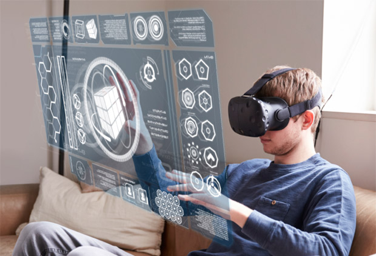
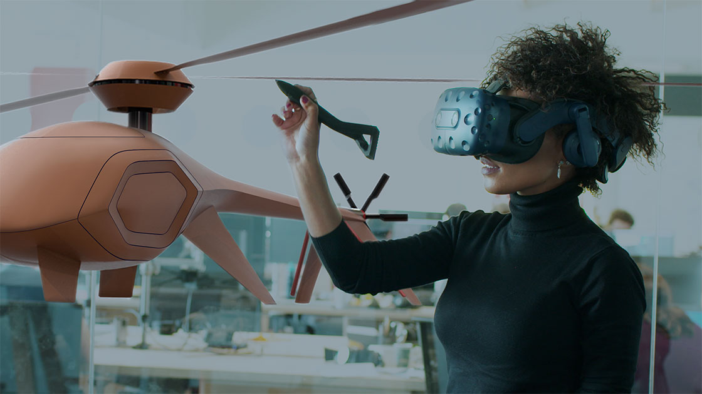
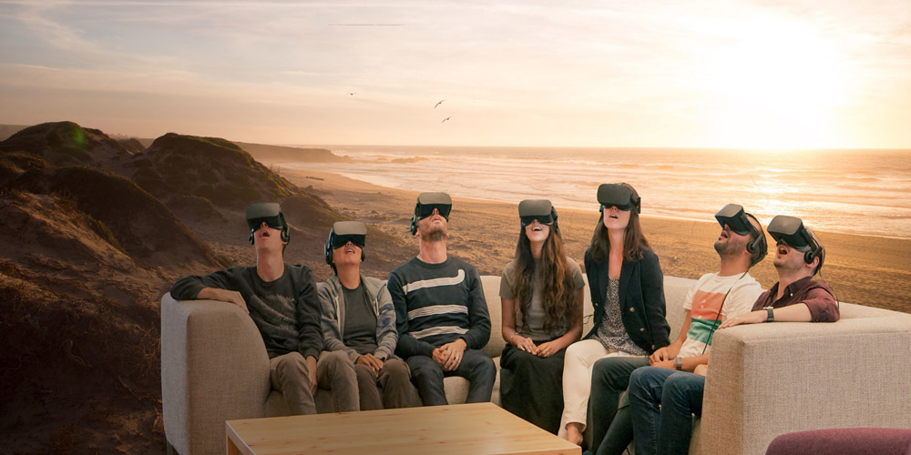

Сьогодні технології віртуальної реальності стрімко розвиваються і поступово стають частиною життя сучасної людини. За прогнозами, в недалекому майбутньому, віртуальне середовище буде звичним простором, який буде використовуватися для відпочинку, навчання і роботи. Наприклад, людина зможе обирати для себе оптимальні умови для релаксу, спробувати себе в тій чи іншій професії, заздалегідь подивитися умови проживання в тому чи іншому готелі та багато-багато іншого. Перспективи віртуальних світів по істині фантастичні.
ЩО ТАКЕ ВІРТУАЛЬНА РЕАЛЬНІСТЬ

Віртуальна реальність (Virtual Reality, VR) - це штучно створений світ, в який людина занурюється за допомогою VR-шоломів та інших спеціальних пристроїв. Атмосфера повного занурення настільки реальна, що людина може виконувати всі звичні для неї дії та використовувати всі п'ять органів почуттів: смак, нюх, дотик, слух, зір. Все це можливо завдяки такій ще новій, але перспективній та затребуваній професії, як - Архітектор віртуальної реальності.
ХТО ТАКИЙ АРХІТЕКТОР ВІРТУАЛЬНОЇ РЕАЛЬНОСТІ
Архітектор віртуальної реальності або архітектор VR - це фахівець, який за допомогою спеціальних програм проектує і створює новий штучний простір. Даний фахівець опрацьовує все до найдрібніших деталей: від живих істот і будівельних споруд до звуків і запахів.
Як правило, більшість людей ототожнюють технології VR з комп'ютерними відео-іграми. Однак область застосування даних технологій набагато ширше. Сьогодні їх успішно використовують у сфері кінематографа, будівництва, дизайну, нерухомості, освіти, автомобілебудування, охорони здоров'я, туризму та багатьох інших.
Так, наприклад, VR-технології допомагають відтворити симуляції водіння автомобіля або управління літаком, проведення хірургічного втручання або участі в віртуальному бою.
ЩО РОБИТЬ АРХІТЕКТОР ВІРТУАЛЬНОЇ РЕАЛЬНОСТІ
Кожен новий проект для архітектора VR починається з спілкування із Замовником. На першій зустрічі важливо проговорити всі деталі, побажання і технічні вимоги до роботи. Після розробки і затвердження проектної документації фахівець переходить до реалізації проекту. Придумування і продумування ідей, а також найкращих способів їхньої реалізації - є одним з основних, тривалих і трудомістких етапів в процесі створення нового віртуального світу.
На даному етапі архітектор VR тісно співпрацює з вузькими спеціалістами в сфері програмування та дизайну. По закінченню робіт фахівець проводить тестування і при виявленні дефектів і помилок, усуває їх. Для презентації Замовнику новий віртуальний продукт повинен функціонувати ідеально.
ОСОБИСТІ ЯКОСТІ АРХІТЕКТОРА ВІРТУАЛЬНОЇ РЕАЛЬНОСТІ
- багата уява і креативність;
- наявність художнього смаку;
- математичник склад розуму;
- комунікабельність та організаторські здібності;
- відповідальність і самоорганізація.
Професія Архітектор віртуальної реальності сьогодні широко затребувана на світовому ринку праці. Кваліфіковані фахівці високо цінуються і відрізняються високими гонорарами. У цій професії можна виразити свої творчі здібності та реалізувати найнеймовірніші задуми.
ЯК СТАТИ АРХІТЕКТОРОМ ВІРТУАЛЬНОЇ РЕАЛЬНОСТІ
Для того щоб стати архітектором віртуальної реальності, необхідно мати певні знання, навички та вміння. З причини того, що професія на даний момент належить до професій майбутнього і є відносно новою для нашої країни, конкретні прямі навчальні програми у ВНЗ України по ній поки не представлені. Безумовно, бажаючим освоїти дану професію необхідно мати вищу освіту, бажано в області інформаційних технологій, дизайну, програмування, штучного інтелекту і т.п. Також, як допомога фахівцю-початківцю підійдуть профільні курси, які представлені у великій кількості, як в офлайні, так і в онлайн-доступі.
В роботі архітектора віртуальної реальності велика увага приділяється сегменту, який відповідає за чуттєве сприйняття навколишнього віртуального світу і за емоційний стан людини в ньому. Тому майбутньому архітектору VR також знадобляться знання в області психології.
Крім того, на даний момент, обов'язковою умовою успішного освоєння напряму «віртуальна реальність» є самоосвіта. Вивчення спеціальної літератури, моніторинг тематичних інтернет-сайтів, підписка на профільні розсилки і сторінки в соціальних мережах - все це, безумовно, допоможе бути в курсі останніх новинок і розробок в світі VR.
Потрапити на стажування в компанію з розробки віртуальних продуктів, - це прекрасна перспектива для старту. Тут головне зуміти зарекомендувати себе з кращого боку і скористатися шансом, потрапити в штат компанії.
Скільки заробляє архітектор VR?
Дизайнер віртуальних світів - дуже затребувана професія в даний час. Тому середня річна зарплата такого фахівця варіюється від 35 000 до 45 000 євро. Це приблизно 2916-3750 євро на місяць. Звичайно, в країнах СНД зарплата архітектора віртуальності набагато нижче. Наприклад, в Росії вона коливається від 90 000 до 120 000 рублів.
Відзначимо, що оплата праці обговорюється в індивідуальному порядку і залежить від різних факторів, будь то досвід роботи, величина компанії, масштаб проекту і т.д.
Де можна отримати знання?
Відразу говоримо, що закладів, де можна здобути освіту дизайнера віртуальних світів, дуже мало, зате онлайн-курсів предосаточно.
Вищі навчальні заклади, де навчають VR-дизайну:
- Айдахскій університет (США). Бакалаврат: віртуальні технології та дизайн. Програма націлена на вивчення дизайну відеоігор і створення VR-симуляцій, застосування їх в різних областях - освіті, розвагах та бізнесі.
- Хемніцкій технічний університет (Німеччина). Магістратура: розумні медіа і віртуальна реальність. Програма досить велика і включає відразу вивчення сучасних медіа, штучного інтелекту та використання VR в трансмедійном світі.
Повернутися на головну сторінку
Автор: Приходько Михайло